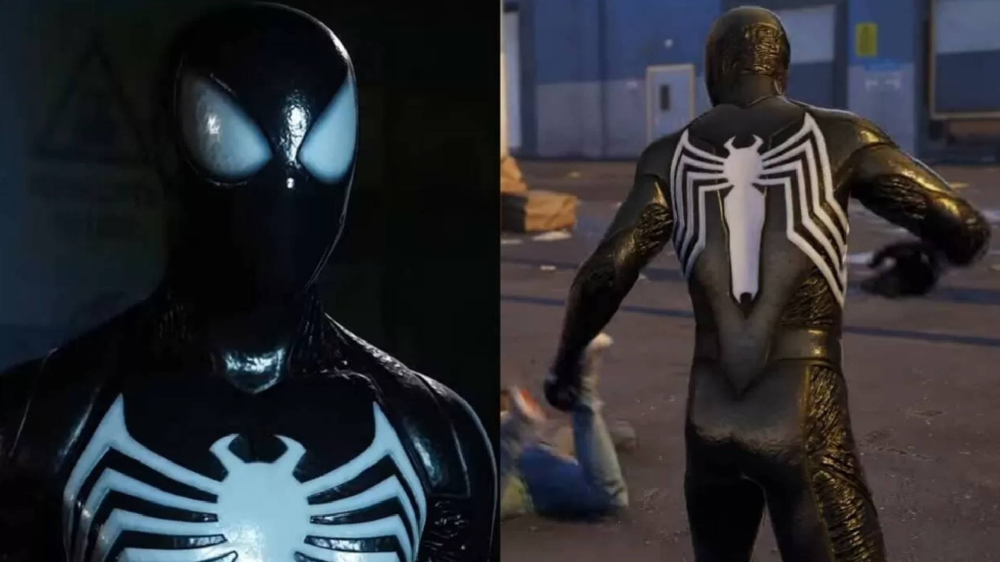
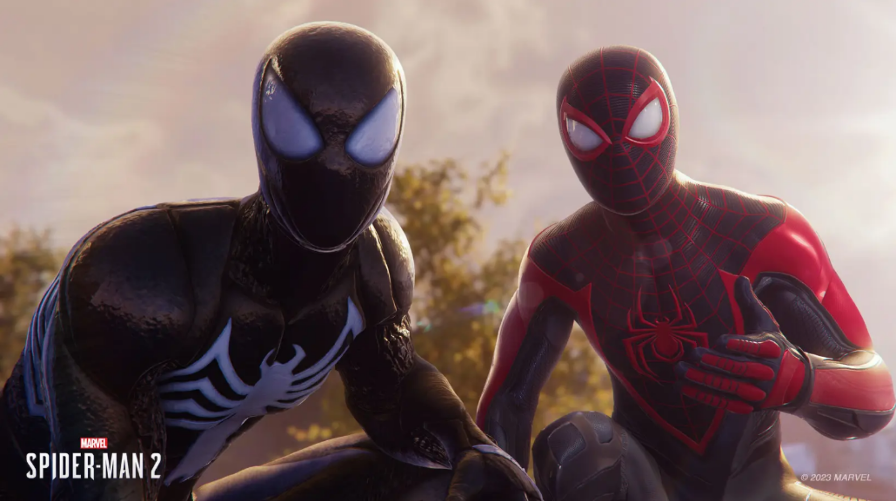

El traje negro de Peter Parker en Marvel's Spider-Man 2 divide a los fans
El nuevo traje simbiótico de Peter Parker presenta un aspecto pegajoso y cuenta con algunas partes que parecen simular una armadura. Este último detalle no ha terminado de convencer a algunos.
Marvel's Spider-Man 2 se dejó ver al final del PlayStation Showcase en un extenso y espectacular gameplay que deleitó a los fans del trepamuros con escenas de acción frenéticas, saltos imposibles, coreografías de peleas con animaciones realmente trabajadas y una pizca de información acerca de la historia que nos contará esta secuela de Marvel's Spider-Man. A pesar de que, en general, dejó buenas sensaciones entre los usuarios, en redes sociales y foros de videojuegos podemos encontrar cierta disparidad de opiniones en lo que respecta al nuevo traje simbiótico de Peter Parker, el cual se lució por primera vez en este último vistazo.
El gameplay revela que esta vez los hombres araña tendrán que enfrentarse a Kraven el Cazador, pero Peter Parker y Miles Morales no estarán solos, ya que Venom no será solo un personaje, sino que se unirá a Peter para crear el Traje Negro, que permite usar poderes simbióticos en el fragor de la batalla. Aunque seguro que esto le pasará factura a Peter...
El traje negro de Peter Parker presenta un aspecto pegajoso, ya que, como bien sabréis, está formado por un organismo alienígena que recubre el cuerpo del superhéroe, mientras que también tiene algunas partes parecidas a una armadura, algo que se puede apreciar en las hombreras y la espalda. Esto último no ha terminado de agradar a aquellos fans que consideran que no es demasiado lógico añadir "diseños complicados de armadura a los trajes de carne alienígena", aunque también podemos encontrar usuarios que han quedado muy satisfechos con el nuevo traje de Peter Parker y han señalado que es "genial" y que no hay nada de lo que quejarse.
Los Spideys también tendrán compañía con un nuevo dron que añadirá algunos golpes narrativos extra. Y también habrá otras bondades, como alas de telaraña para atravesar más fácilmente la ciudad, y redes que usar en combate para abatir enemigos en silencio. Miles cuenta incluso con nuevos movimientos bioeléctricos personales con los que puede electrocutar a varios enemigos en área. En cuanto a cómo funcionará todo esto en la práctica, ambos protagonistas tendrán sus propios árboles de habilidades para desbloquear y progresar, así como uno de uso compartido.
Os recordamos que Marvel's Spider-Man 2 aterrizará en exclusiva para PlayStation 5 en una fecha todavía por determinar de otoño de este mismo año. En el siguiente enlace podéis echarle un vistazo a una comparativa que pone el nuevo título frente a su predecesor.
Aquí tienes el trailer al completo: